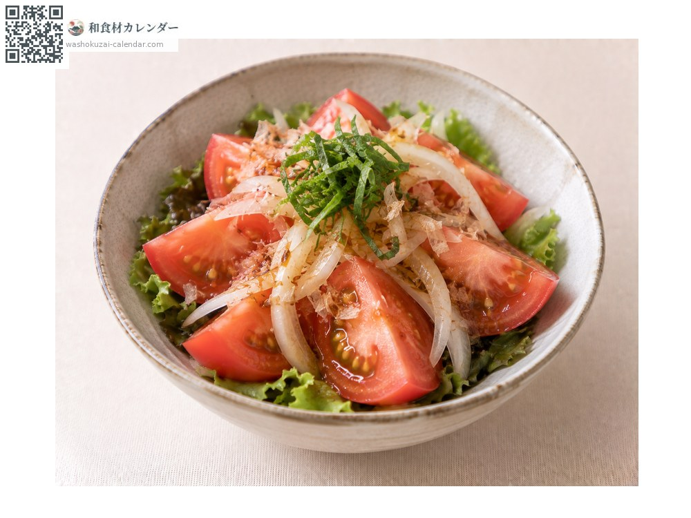
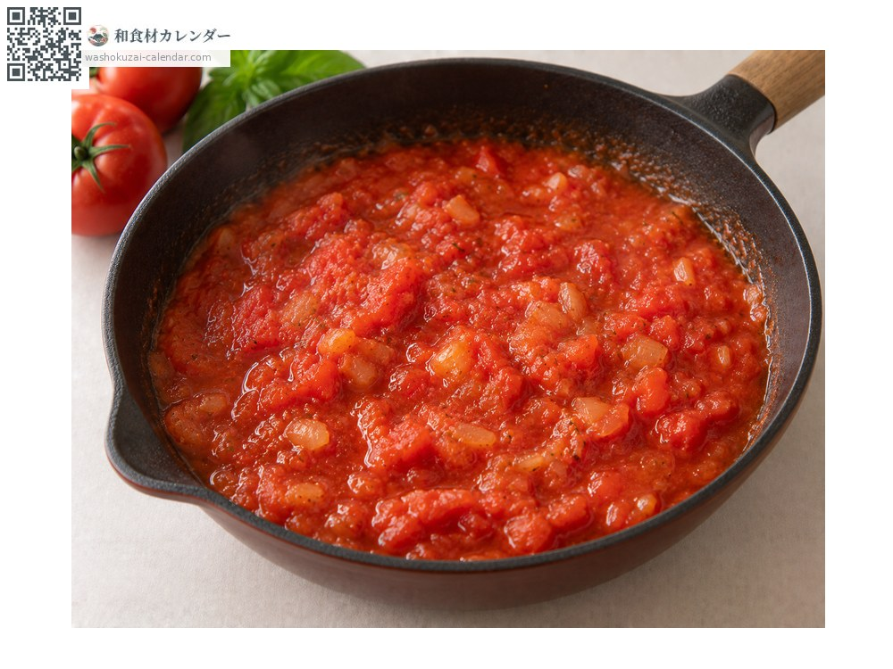
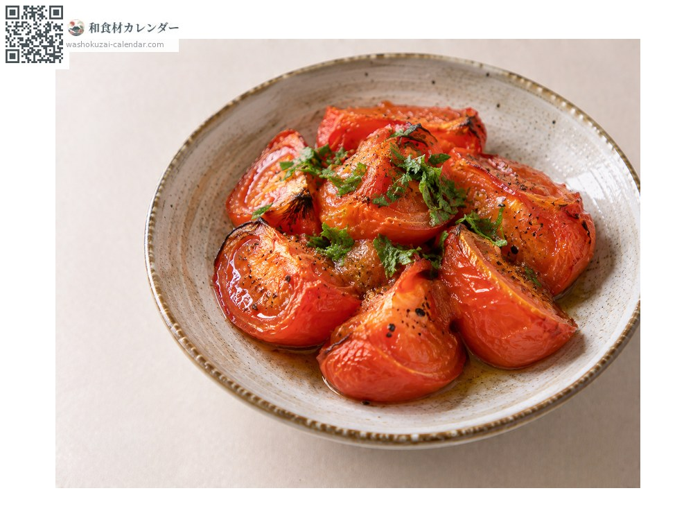
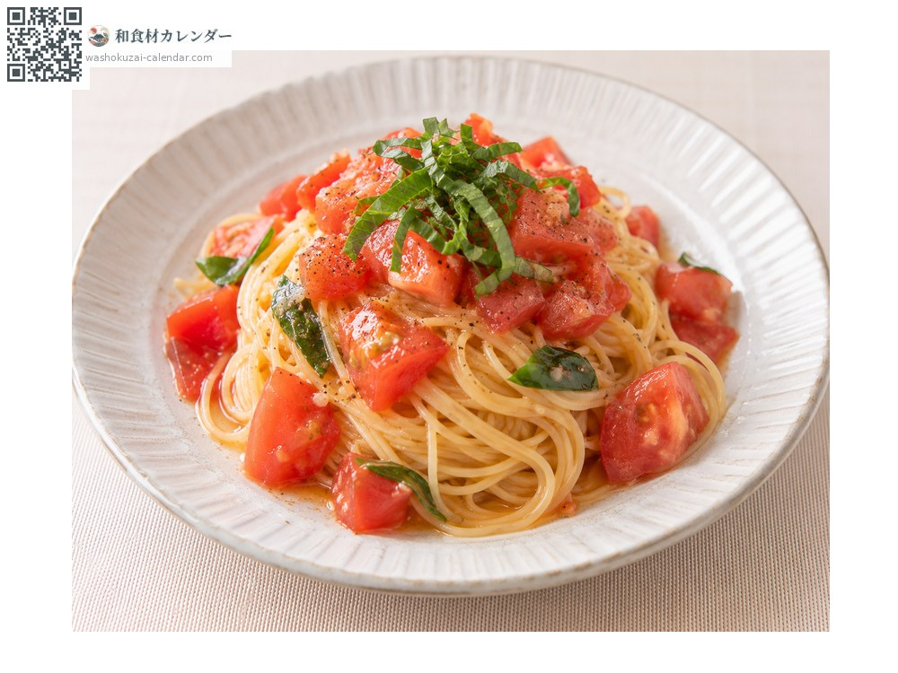

ผัก
มะเขือเทศ
トマト とまと
อร่อยที่สุดในเดือน มิ.ย., ก.ค., ส.ค.

ช่วงที่อร่อยที่สุด
ม.ค.
ก.พ.
มี.ค.
เม.ย.
พ.ค.
มิ.ย.
ก.ค.
ส.ค.
ก.ย.
ต.ค.
พ.ย.
ธ.ค.
ช่วงอร่อยที่สุดมีจำหน่าย
วิธีปรุง

สลัด
หั่นกินสด โรยเกลือกับน้ำมันมะกอก

ซอสมะเขือเทศเคี่ยว
เคี่ยวจนรสอูมามิเข้มข้น

มะเขือเทศอบ
พอผ่านความร้อนจะหวานขึ้น

พาสต้าเย็นมะเขือเทศ
เหมาะกับฤดูร้อน
วิธีเลือก
ขั้วสีเขียวและงอนขึ้น ทั้งลูกมีสีสม่ำเสมอ ยกแล้วรู้สึกหนัก
วิธีเก็บรักษา
ก่อนสุกเต็มที่ให้บ่มที่อุณหภูมิห้อง เมื่อสุกแล้วจึงแช่เย็น ถ้าเย็นเกินไปรสจะตก
แหล่งผลิตหลัก
เกร็ดน่ารู้
เมื่อผ่านความร้อน กรดกลูตามิกซึ่งเป็นสารรสอูมามิจะทำงานได้ดีขึ้น เป็นผักที่บทบาทเปลี่ยนไปตามการกินสดหรือปรุงสุก
วัตถุดิบที่อร่อยที่สุดในช่วงเดียวกัน
 หน่อไม้ฝรั่ง
หน่อไม้ฝรั่ง ผักกาดหอมห่อ
ผักกาดหอมห่อ ผักปลัง
ผักปลัง เมียวกะ (ดอกขิงญี่ปุ่น)
เมียวกะ (ดอกขิงญี่ปุ่น) ใบชิโสะ
ใบชิโสะ ยอดอ่อนซันโช
ยอดอ่อนซันโช เมล็ดซันโชอ่อน
เมล็ดซันโชอ่อน ขิงญี่ปุ่น
ขิงญี่ปุ่น